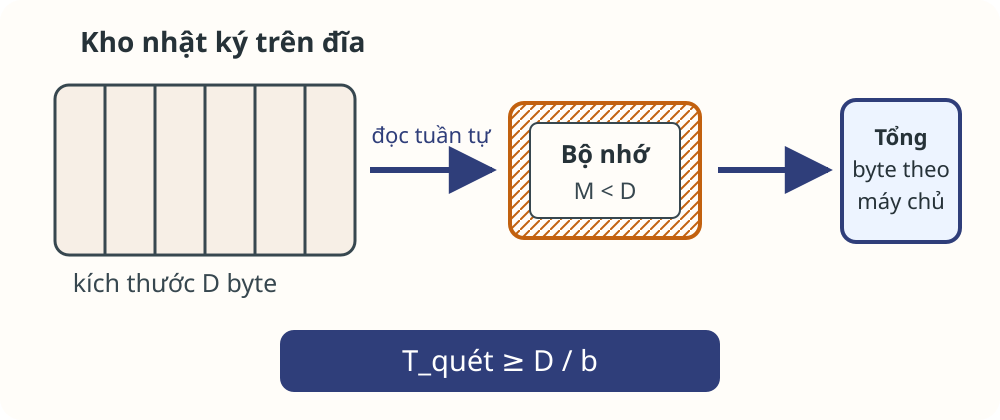
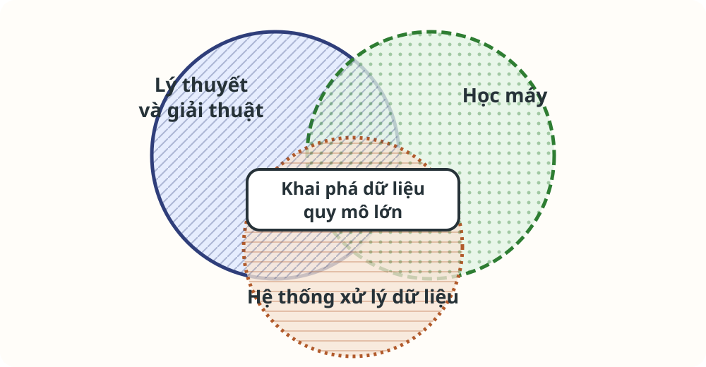
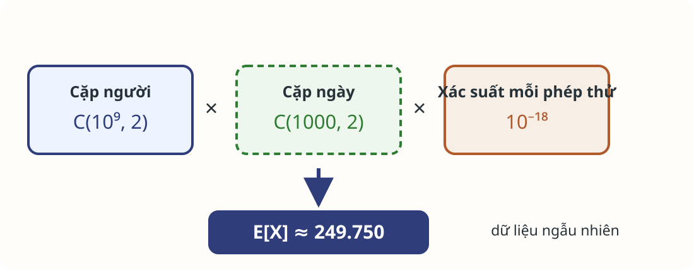
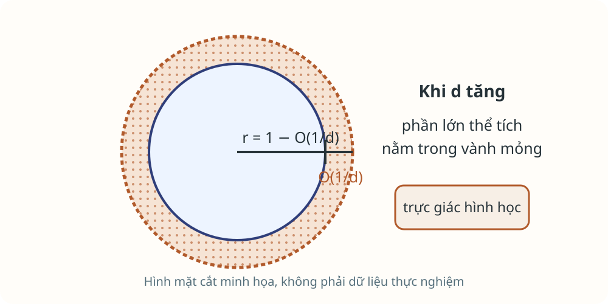

Bài toán dữ liệu lớn và mô hình thuật toán
Bài 1 · Giải thuật nền tảng của Khoa học dữ liệu
Năm học 2026–2027 · Học kỳ 1
Trường Đại học Công nghệ · Đại học Quốc gia Hà Nội
Mục tiêu học tập
- Đặc tả và chứng minh thuật toán quét–cộng dồn trên kho dữ liệu lớn.
- Phân biệt bài toán, biểu diễn, thuật toán, cài đặt và kết quả.
- Phân tích ba chi phí cùng bảo đảm của một lời giải.
- Ước lượng số biến cố trùng ngẫu nhiên khi có nhiều phép thử.
Dữ liệu vượt khỏi bộ nhớ
Kích thước dữ liệu làm thay đổi mô hình truy cập trước khi làm thay đổi thuật toán.
Kho nhật ký không vừa một máy

Một lần quét đã là một chi phí
Dữ liệu
$D$ byte, đọc tuần tự với băng thông $b$ byte/giây.
Cận dưới truyền dữ liệu
$T_{\text{quét}}\ge D/b$
Thuật toán nhiều lượt quét nhân chi phí này theo số lượt.
Dữ liệu lớn có nhiều hình dạng
Chiều cao
Nhiều bản ghi; cần quét, lấy mẫu hoặc phân vùng.
Chiều rộng
Nhiều thuộc tính; khoảng cách và biểu diễn đổi tính chất.
Liên kết
Đồ thị lớn; truy cập lân cận có thể bất quy tắc.
Liên tục
Dòng không kết thúc; không thể lưu toàn bộ quá khứ.
Một lượt quét đủ để cộng dồn
| Bản ghi | Đọc | Bảng tổng sau cập nhật |
|---|---|---|
| 1 | (a.vn, 40) | a.vn: 40 |
| 2 | (b.vn, 25) | a.vn: 40; b.vn: 25 |
| 3 | (a.vn, 15) | a.vn: 55; b.vn: 25 |
| 4 | (c.vn, 0) | a.vn: 55; b.vn: 25; c.vn: 0 |
Mỗi bản ghi chỉ sửa tổng của máy chủ đang đọc.
Đặc tả xác định kết quả cần trả
Đầu vào
$L=((u_i,s_i))_{i=1}^{n}$ với $s_i\in\mathbb{N}_0$.
Đầu ra
Với mỗi $u$: $S[u]=\sum_{i:u_i=u}s_i$.
Điều kiện trước
Trường máy chủ và kích thước hợp lệ; kiểu tổng không tràn.
Điều kiện sau
Bảng có đúng các máy chủ đã xuất hiện và tổng của từng máy chủ.
Thuật toán giữ một tổng cho mỗi máy chủ
tổng ← bảng rỗng
với mỗi bản ghi (máy_chủ, số_byte) theo thứ tự quét:
nếu máy_chủ chưa có trong tổng: tổng[máy_chủ] ← 0
tổng[máy_chủ] ← tổng[máy_chủ] + số_byte
trả về tổngBất biến tiền tố chứng minh tính đúng
Sau $k$ bản ghi, tập khóa của tổng đúng bằng tập máy chủ trong tiền tố; với mỗi khóa $u$, tổng[u] bằng tổng kích thước của $u$ trong tiền tố đó.
- Khởi tạo: tiền tố rỗng cho bảng rỗng.
- Duy trì: bước cập nhật thêm đúng $s_{k+1}$ vào khóa $u_{k+1}$.
- Kết thúc: mỗi bước xử lý một bản ghi, nên sau $n$ bước bất biến đúng bằng điều kiện sau.
Một lượt quét đổi lấy bảng theo máy chủ
Ba chi phí
Kỳ vọng $O(n)$ thời gian; $O(h)$ bộ nhớ; một lượt quét.
Một bảo đảm
Sai số bằng 0 theo đặc tả.
Giả thiết: mỗi thao tác bảng băm có thời gian kỳ vọng $O(1)$ và bảng $h$ khóa vừa bộ nhớ.
Từ bài toán đến kết quả
Một câu trả lời có thể đúng về mặt toán học nhưng vẫn không khả thi trong mô hình truy cập đã chọn.
Năm tầng trả lời năm câu khác nhau
- Bài toán quy định cần trả lời gì.
- Biểu diễn quy định dữ liệu nào có thể truy cập.
- Mô hình chi phí quy định thao tác nào đắt.
Ba miền cùng giải quyết bài toán dữ liệu lớn

Kho nhật ký tách bài toán khỏi cách triển khai
Đặc tả ổn định
Tổng byte theo máy chủ không đổi khi thay ngôn ngữ hoặc thiết bị lưu trữ.
Triển khai phụ thuộc giới hạn
Bảng băm phù hợp khi $h$ khóa vừa bộ nhớ; mô hình khác cần lời giải khác.
Hai loại sản phẩm mô hình hóa
Mô hình thống kê
Giả thiết một phân phối sinh dữ liệu và ước lượng tham số.
Mô hình dữ liệu theo truy vấn
Câu trả lời cô đọng phục vụ một lớp truy vấn trên dữ liệu.
Tóm tắt và trích đặc trưng
Tóm tắt
Giữ một mô tả ngắn, có thể xấp xỉ, của toàn bộ dữ liệu.
Ví dụ trong sách: PageRank, tâm cụm.
Trích đặc trưng
Giữ các mẫu nổi bật và bỏ phần còn lại.
Ví dụ trong sách: tập mục thường xuyên, cặp tương đồng.
Mô hình và giải thuật trong lọc thư
$\operatorname{điểm}(e)=\sum_{w\in e}\operatorname{trọng\_số}(w)$
Ở đây $e$ là một thư và $w$ là một từ trong thư.
Khâu học trọng số tạo mô hình; khâu cộng và so ngưỡng dùng mô hình.
Phân loại sản phẩm tính toán
Bảng tổng
Tóm tắt chính xác.
Phân phối ước lượng
Mô hình thống kê.
Cặp gần nhau
Đặc trưng được trích.
Mô hình chi phí
Đếm phép toán của bộ xử lý trung tâm chưa đủ khi dữ liệu phải di chuyển giữa các tầng lưu trữ.
Bộ nhớ chính không phải giả định mặc định
Mô hình quen thuộc
Đầu vào ở bộ nhớ; truy cập lặp lại theo chỉ số.
Dữ liệu lớn
Đầu vào ở thiết bị ngoài hoặc dòng; số lượt quét và truyền khối trở thành tham số.
Ba chi phí và một bảo đảm
Tính toán
Số phép cập nhật hoặc phép toán.
Bộ nhớ
Kích thước trạng thái đang giữ.
Truy cập dữ liệu
Số lượt quét, đọc và ghi khối.
Sai số
Độ lệch hoặc xác suất thất bại nếu dùng xấp xỉ.
Kết quả chính xác và kết quả xấp xỉ
Chính xác
Điều kiện sau xác định duy nhất kết quả; không chấp nhận sai lệch.
Xấp xỉ
Đặc tả phải nêu đại lượng sai số, xác suất bảo đảm và nguồn ngẫu nhiên.
Xấp xỉ là một đặc tả khác, không phải kết quả chính xác bị tính thiếu.
Phép đánh đổi phải nằm trong đặc tả
Giữ gì
Đại lượng đầu ra và bảo đảm cần thiết.
Giảm gì
Bộ nhớ, lượt quét, thời gian hoặc truyền dữ liệu.
Chấp nhận gì
Sai số, xác suất thất bại hoặc phạm vi truy vấn hẹp hơn.
Tín hiệu giả trong dữ liệu lớn
Khi số phép thử tăng, mẫu hiếm vẫn có thể xuất hiện nhiều lần chỉ do ngẫu nhiên.
Mẫu trùng trong hồ sơ lưu trú
- $P=10^9$ người, $T=1000$ ngày, $H=10^5$ khách sạn.
- Với mỗi người và mỗi ngày, xác suất đi khách sạn là $q=0{,}01$; các quyết định độc lập giữa người và giữa ngày.
- Báo một cặp nếu họ cùng khách sạn trong hai ngày khác nhau.
Trong mỗi ngày được chọn, hai người ở cùng một khách sạn; khách sạn có thể khác giữa hai ngày.
Mô hình ngẫu nhiên xác định xác suất trùng
- Giữa các người và các ngày, quyết định đi khách sạn độc lập.
- Có điều kiện đã đi, mỗi người chọn đều một trong $H$ khách sạn.
- Hai ngày trong một phép thử là khác nhau.
$p_{1\text{ ngày}}=q^2/H=10^{-9}$
Đếm biến cố trùng bằng kỳ vọng

Kỳ vọng khoảng 250.000 biến cố trùng
$\binom{10^9}{2}\binom{1000}{2}10^{-18}\approx249.750$
$249.750$ dùng tổ hợp; $250.000$ dùng $\binom{n}{2}\approx n^2/2$.
Mô hình ngẫu nhiên vẫn tạo nhiều biến cố trùng vì có rất nhiều cặp người và cặp ngày.
Thay đổi quy mô quan sát
Gấp đôi số ngày
Quan sát kéo dài từ 1000 lên 2000 ngày.
Gấp đôi người và khách sạn
$P=2\cdot10^9$ và $H=2\cdot10^5$.
Đòi trùng ba ngày
Ba ngày khác nhau, mỗi ngày cùng một khách sạn.
Số chiều lớn đổi trực giác
Các đại lượng quen thuộc trong hai hoặc ba chiều có thể tập trung mạnh khi số chiều tăng.
Khoảng cách là tổng của nhiều thành phần
$\|\mathbf{y}-\mathbf{z}\|_2^2=\sum_{j=1}^{d}(y_j-z_j)^2$
Nếu các tọa độ độc lập, cùng phân phối và có phương sai hữu hạn, tổng có thể tập trung quanh kỳ vọng.
Thể tích tập trung gần biên

Vành ngoài có độ dày cỡ $1/d$ lần bán kính.
Trực giác này phụ thuộc mô hình; hình không phải kết quả thực nghiệm.
Bản đồ 15 bài theo năm nhóm

Chọn mô hình theo điểm nghẽn
Dữ liệu không vừa bộ nhớ
Đếm lượt quét, trạng thái và thao tác vào/ra.
Nhiều phép thử
Đếm cơ hội trùng và biến cố trùng kỳ vọng.
Số chiều lớn
Nêu phân phối và giả thiết trước kết luận.
Kết quả xấp xỉ
Nêu sai số và xác suất bảo đảm.
Bài tập củng cố
Hai bài tập từ MMDS yêu cầu dựng mô hình xác suất trước khi diễn giải kết quả.
Bài 1.2.1: ba thay đổi của hồ sơ lưu trú
Dùng dữ kiện trong ví dụ “Mẫu trùng trong hồ sơ lưu trú” (MMDS Mục 1.2.3). Với mỗi thay đổi dưới đây, các số còn lại giữ nguyên:
- Thời gian quan sát tăng lên 2000 ngày.
- Số người tăng lên 2 tỷ và số khách sạn tăng lên 200.000.
- Chỉ báo một cặp nếu họ ở cùng một khách sạn cùng thời điểm trong ba ngày khác nhau.
Sản phẩm: ba công thức; chưa cần tính hết.
Tăng số ngày và số người
- Giữ các số khác, thay $T=2000$.
- Quay về $T=1000$, thay $P=2\cdot10^9$ và $H=2\cdot10^5$.
Sản phẩm: hai phép tính và một câu giải thích yếu tố tăng hoặc triệt tiêu.
Yêu cầu trùng trong ba ngày
Giữ dữ kiện cơ sở. Chỉ báo một cặp nếu trong ba ngày khác nhau, ở mỗi ngày họ ở cùng một khách sạn cùng thời điểm; khách sạn có thể khác giữa các ngày.
Sản phẩm: công thức có $\binom{T}{3}$, giá trị xấp xỉ và kết luận theo mô hình.
Trùng giỏ hàng
- Có $10^8$ người; mỗi người đi siêu thị 100 lần trong một năm.
- Mỗi lượt, một người mua đúng 10 trong 1000 mặt hàng.
- Giả thuyết nguồn: một cặp thuộc nhóm cần phát hiện chắc chắn mua cùng một tập 10 mặt hàng vào một thời điểm trong năm.
Sản phẩm: không gian giỏ hàng, số cặp lượt mua, kỳ vọng trùng ngẫu nhiên và kết luận.
Chữa Bài 1.2.2
Đặt $X$ là số cặp lượt mua của hai người khác nhau có cùng tập 10 mặt hàng.
Sản phẩm: lời giải hoàn chỉnh và hai giới hạn của mô hình.